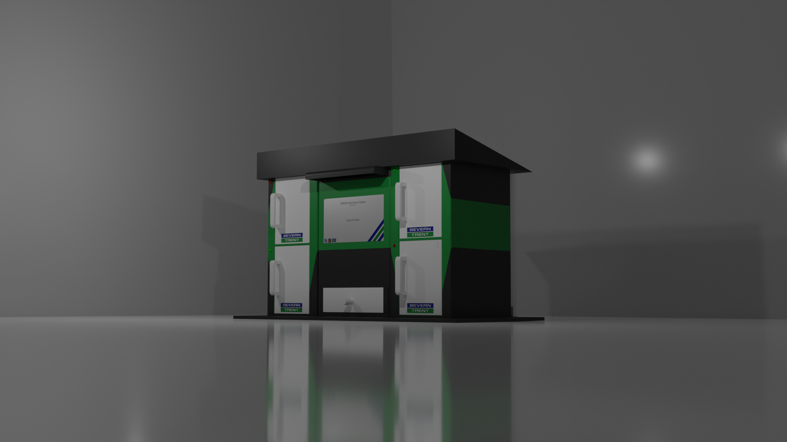

Industrial Cadets Gold Award (2022/23) — A smart, modular safety kiosk featuring automatic locker locking, LED occupancy status, and an interactive touchscreen program.

As part of the industrial cadets award, our team of 6 were tasked with designing a digital replacement for existing paper-based sign in systems at Severn Trent Water treatment plants. The brief highlighted key customer requirements (see full report below), including storage for ignition hazards as well as a 3D site information. The company also requested the ability to log employee and contractor sign-in via an inbuilt digital database.
When drafting our ideas for the prototype, we chose to split the project into three components: The enclosure, the electronics, and the software. A key design principle was modularity and DfMA (Design for Manufacturing and Assembly), which would feature throughout the enclosure design. Every component of the enclosure was to be assembled with minimal permanent fasteners, instead focusing on slots grooves and screws.
In terms of the software and microcontroller framework, we opted for a 2 fronted approach. The front end would be written in Python (using Kivy for GUI), providing users with a simple but aesthetic GUI to convey key info. This program would also perform all the high level logic (such as file handling) and locker reservation. However, control over the physical components (LEDs and Servos) would be done through a microcontroller (Arduino Mega) to ensure there were enough GPIO pins and most importantly PWM control for servos. The front end would then transmit instructions to the microcontroller when specific actions were needed to reflect user requests.
Successfully built and verified a scaled kiosk prototype with automatic locker locks, real-time occupancy status indicators, and an interactive safety map. At the award ceremony, we were awarded the 'Best Teamwork' award for our prototype and presentation. This was a testement to the coordination and synchronicity that our team displayed throughout the planning, design and execution of the project.